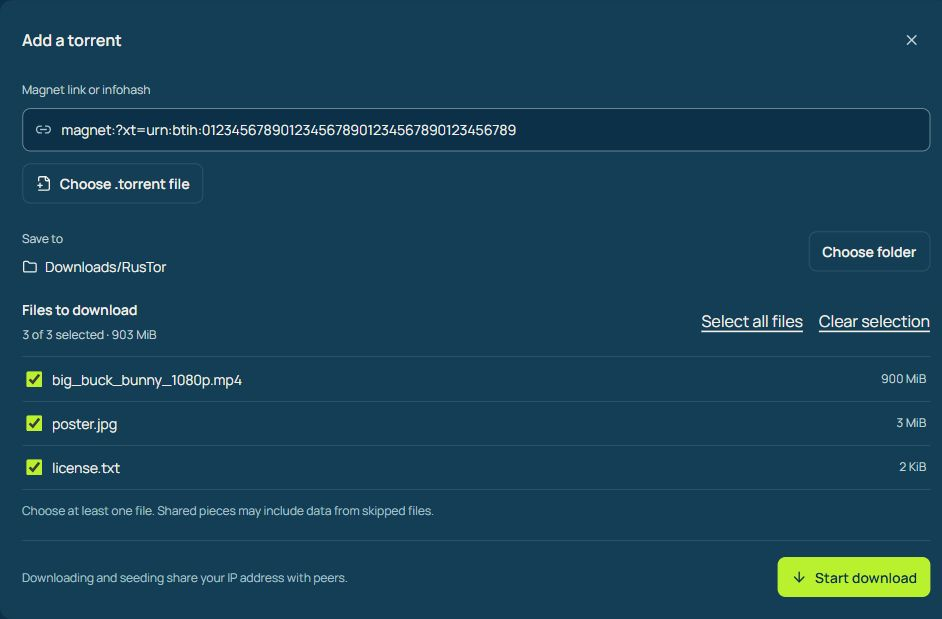
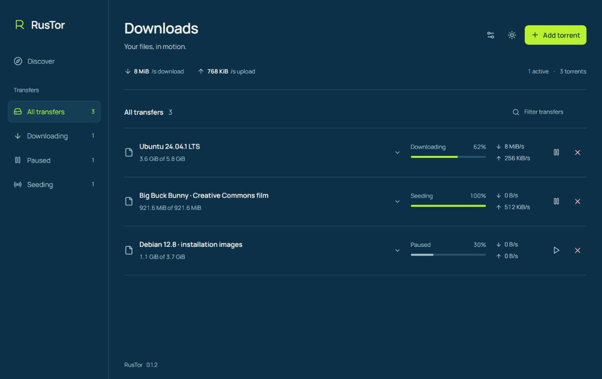
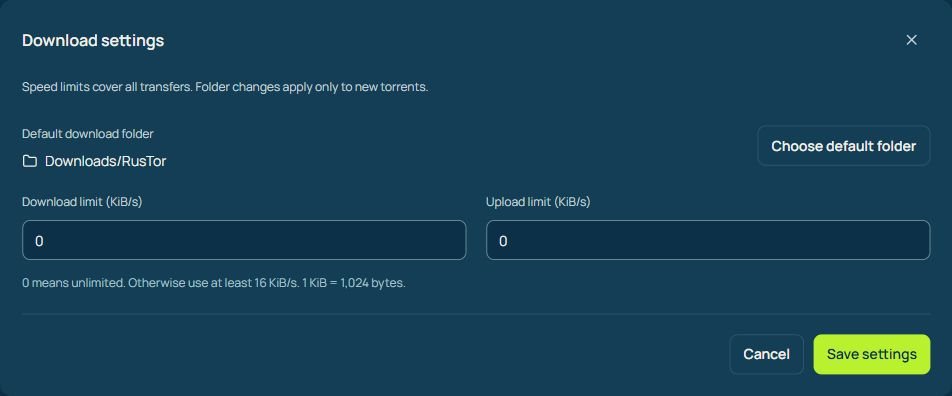

Leave the rest behind.
Open a magnet or torrent and choose the files you actually want. Pick a folder before your download begins.
A whole torrent. Or just your part of it.

A torrent client built with Rust. Search, choose your files, and keep every transfer in view.
Download RusTorFree & open source.Windows · Linux · macOS
A clear view of what’s downloading, what’s seeding, and what’s next.

Choose what comes in.
Decide how it gets there.
Open a magnet or torrent and choose the files you actually want. Pick a folder before your download begins.
A whole torrent. Or just your part of it.

Limit upload and download speeds. Pause, resume, or stop a torrent while keeping your files. Reopen the app and pick up your saved session.
Your bandwidth. Your schedule.

Start in Discover. Search Movies, TV, Games and Anime, then bring your selection straight into Downloads.
Pick your system.
We’ll take it from here.
See the available version on GitHub.
Looking for an older version?Choose a package for your system from GitHub Releases.
Preview packages are unsigned. Windows and macOS may show a security warning. Linux and macOS desktop checks are still in progress.
What’s new, what changed, and the version you came for. All public releases, together.
View on GitHubYes. RusTor’s original code is open source under the MIT License. You can use it, read the code, and contribute on GitHub.
Preview packages are available for Windows x64, Linux x64, and Macs with Apple Silicon or Intel processors. Linux and macOS installation and desktop behavior are not yet fully validated.
The × control stops downloading or seeding and removes the torrent from your saved session. Complete and partial files remain on disk.
RusTor saves your torrents, destinations and file selections. When you reopen it, it restores the session and checks existing data before continuing. Large downloads may take a while to recheck.
No. Closing RusTor stops downloading and seeding. There is no background tray service.
These preview builds are unsigned, and macOS notarization is not configured. Check the release notes and SHA256SUMS before installing. Download only from this project’s GitHub releases.
No. BitTorrent peers can see your IP address. RusTor does not include a VPN or anonymous routing. Share only content you have permission to distribute.
RusTor’s search behavior draws on Torlink. Results depend on external source availability; metadata can be missing or up to five minutes old. Torrents using only BitTorrent v2 are currently unsupported.